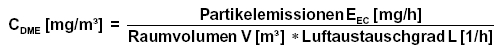
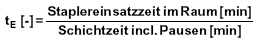
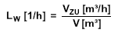
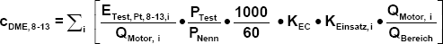
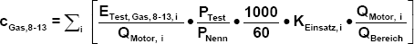
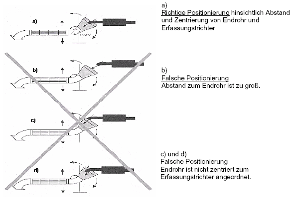
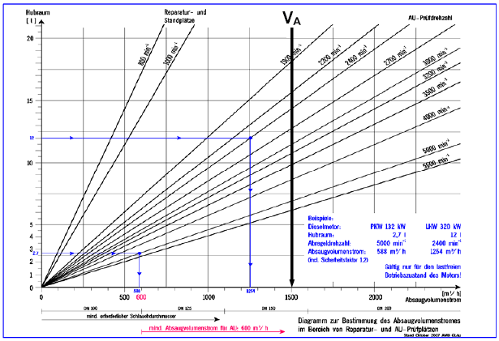

(1) Vor der Neuanschaffung von Flurförderzeugen ist vom Arbeitgeber zu prüfen, ob auf den Einsatz von dieselgetriebenen Flurförderzeugen in ganz oder teilweise geschlossenen Arbeitsbereichen verzichtet werden kann.
(2) Der Einsatz dieselgetriebener Flurförderzeuge in ganz oder teilweise geschlossenen Arbeitsbereichen ist begründet, wenn zum Beispiel
(3) Ist der Einsatz von dieselgetriebenen Flurförderzeugen in ganz oder teilweise geschlossenen Arbeitsbereichen begründet, ist die Emission von DME durch technische Maßnahmen nach dem Stand der Technik zu minimieren.
(1) DME-Konzentrationen anderer Dieselmotoren durfen nach dem Verfahren nicht berechnet werden.
(2) Die Diesel-Gabelstapler mussen gemäß den Einsatzbeschränkungen nach Anlage 4 Nummer 1.1 betrieben werden.
(3) Alle eingesetzten Diesel-Gabelstapler unterliegen dem Wartungskonzept nach Nummer 4.2.4 dieser TRGS.
(4) Bis zu einem errechneten Wert CDME ≤ 0,1 mg/m3 ist das Verfahren als Alternative zu Messungen zulässig.
| ||||||||||||||||||||||||||||||||||||||||||||||||||||||||||||||||||||||||||||||||||||||||||||
*) ab Stufe III B: NRTC-Test
Erläuterungen zum Berechnungsblatt:
Die für das Berechnungsverfahren erforderlichen Parameter können entweder von Gabelstapler-Herstellern bzw. Lieferanten erfragt werden (Partikelemission pro Gabelstapler, DPF-Abscheiderate), durch konventionelle Verfahren ermittelt werden (Anzahl der Gabelstapler des gleichen Typs, Raumvolumen) oder anhand der Festlegung von örtlichen Gegebenheiten aus Tabellen entnommen werden (Luftaustauschgrad). Werden mehrere Gabelstapler des gleichen Typs bei gleichen Einsatzbedingungen eingesetzt, so lässt sich die Gesamtkonzentration an Dieselmotoremissionen in der Raumluft durch einfache Multiplikation mit der Zahl der Gabelstapler bzw. Addition der Einsatzzeitanteile erhalten. Werden mehrere Gabelstapler unterschiedlicher Typen bzw. mit unterschiedlichen Einsatzbedingungen eingesetzt, so ist das Berechnungsverfahren für jeden einzelnen Gabelstapler zu wiederholen und die Ergebnisse sind zu addieren.
Die mittlere DME-Konzentration in der Halle berechnet sich nach folgender Formel:

Die Berechnung ist in folgende drei Schritte untergliedert:
1. Schritt: Berechnung der Partikelemissionen EEC [mg/h]
Diese hängt ab von
Hierfür sind folgende Begriffsbestimmungen zugrunde zu legen:
| Spezifische Partikelemission im C1-Test EPt, C1 [g/kWh] | nennleistungsbezogene Partikelemission (EC) EEC, Nenn [mg/kWh] 10 | ||
| Einsatzbedingungen/Beanspruchung | |||
| leicht | normal | schwer | |
| 0,1 | 11 | 13 | 16 |
| 0,15 | 16 | 19 | 23 |
| 0,2 | 22 | 25 | 31 |
| 0,25 | 27 | 32 | 39 |
| 0,3 | 32 | 38 | 47 |
| 0,4 | 43 | 50 | 62 |
| 0,5 | 54 | 63 | 78 |
| 0,6 | 65 | 76 | 94 |
| 0,7 | 76 | 88 | 109 |
| 0,8 | 86 | 101 | 125 |
| 0,9 | 97 | 113 | 140 |
| 1,0 | 108 | 126 | 156 |

2. Schritt: Ermittlung des Raumvolumens V [m3]
Das Raumvolumen der Halle ist anhand der Raummaße Länge [m], Breite [m] und Höhe [m] zu ermitteln. Das durch Halleneinbauten (z. B. Büros), voluminöse Maschinen, Lagergut oder Regale in Anspruch genommene Volumen ist hiervon abzuziehen.
3. Schritt: Ermittlung des Luftaustauschgrades L [1/h]
Der Luftaustauschgrad L beschreibt die örtliche Lüftungseffizienz. Er basiert auf der Luftwechselzahl Lw und einem Korrekturwert Luftaustauschfaktor LA, der die räumlichen und lufttechnischen Bedingungen berücksichtigt.
L [1/h] = LW [1/h] . LA [-]
Die Luftwechselzahl LW gibt den stündlichen Austausch der Raumluft durch Außenluft (Frischluft) an. Sie ist alleine kein Kriterium für die Beurteilung der Wirksamkeit einer Raumlüftung.
Der Luftaustauschfaktor LA gibt an, wie sich die örtlichen und räumlichen Bedingungen sowie die Art der Raumlüftung, und hier insbesondere die Luftführung, auf eine Konzentrationsverteilung auswirken.
Die betrieblichen Verhältnisse sind anhand der nachfolgenden beiden Tabellen zu charakterisieren. Mit Hilfe der jeweiligen Faktoren lässt sich dann der Luftaustauschgrad ermitteln.
| Raumart | Luftwechsel- zahl LW [1/h] | Luftaustauschfaktor LA [-] | ||
| Gebäude | Lage | Situation | Wert | |
| offene Hallen | - | 10 | - | 1 |
| geschlossene Hallen mit häufigen Transportvorgängen (z.B. Lagerhallen) | freistehendes Gebäude | 8 | Durchfahrten (Tore) ständig geöffnet | 1 |
| Durchfahrten (Tore) nur zur Ein- und Ausfahrt geöffnet | 0,8 | |||
| nicht freistehendes Gebäude (grenzt an andere Gebäude) | 3 | Durchfahrten (Tore) ständig geöffnet | 1 | |
| Durchfahrten (Tore) nur zur Ein- und Ausfahrt geöffnet | 0,5 | |||
| geschlossene Hallen mit gelegentlichen Transportvorgängen (z.B. Fertigungshallen) | freistehendes Gebäude | 1 | mit Einrichtungen zur freien Lüftung | 0,3 |
| ohne Einrichtungen zur freien Lüftung (z.B. Dachreiter) | 1 | |||
| nicht freistehendes Gebäude (grenzt an andere Gebäude) | 0,5 | ohne Einrichtungen zur freien Lüftung | 0,3 | |
| mit Einrichtungen zur freien Lüftung | 0,8 | |||

| Luftführung | Luftaustauschfaktor LA [-] | Bemerkung |
| Zuluft von der Decke (Deckenlüftung) | 0,2 | im Deckenbereich angesammelte DME werden wieder in den Arbeitsbereich zurückgeführt (ungünstigste Fälle der Raumlüftung) |
| Zuluft von der Seite (Tangentiallüftung) | 0,2 | |
| Zuluft in mittlerer Raumhöhe (mit hoher Strömungsgeschwindigkeit) | 0,3 | |
| Zuluft in mittlerer Raumhöhe (mit geringer Strömungsgeschwindigkeit) | 0,5 | |
| Zuluft in Kopfhöhe (mit hoher Strömungsgeschwindigkeit) | 0,8 | |
| Zuluft in Kopfhöhe (mit geringer Strömungsgeschwindigkeit) | 1,2 | |
| Zuluft in Bodennähe (Quelllüftung) | 1,5 | günstigster Fall der Raumlüftung |
Bei der Luftführung mit Zuluft von der Decke (Deckenlüftung) werden im oberen Raumbereich zur Decke hin aufsteigende DME-Emissionen wieder in den Arbeitsbereich zurückgeführt. Hierdurch wird der Luftaustauschgrad erheblich gemindert (ungeeignete Luftführung). Das gleiche gilt für die Einbringung der Zuluft von der Seite (Tangentiallüftung). Wird die Zuluft im bodennahen Bereich zugeführt (Quelllüftung), wird die Abströmung der DME-Emission zur Decke hin unterstützt und somit der Luftaustauschgrad bezogen auf die Arbeitsbereiche erhöht.
(1) Untertägige Arbeitsbereiche im Sinne dieser TRGS sind Arbeitsbereiche im Bergbau unter Tage und bei Bauarbeiten unter Tage.
(2) Wartungsmaßnahmen an Dieselmotoren sind abweichend von den Fristen in Anlage 3 Abs. 1 nach
durchzuführen.
(3) Im Kohlebergbau unter Tage ist der ordnungsgemäße Zustand des Motors durch die Überprüfung des Abgasverhaltens nach Maßgabe der bergbehördlichen Vorschriften durch Fachkundige oder Sachverständige festzustellen.
(1) Bergbau unter Tage im Sinne dieser TRGS sind Tätigkeiten unter Tage gemäß § 2 Bundesberggesetz.
(2) Für jeden Dieselmotor hat der Unternehmer nach Durchführung der allgemeinen Schutzmaßnahmen dieser TRGS die Wettermenge zu ermitteln, die beim Einsatz im Bergbau unter Tage die Gefährdung durch gas- und partikelförmige Abgasbestandteile auf ein Minimum reduziert.
(3) Zur Ermittlung der erforderlichen Wettermenge kann der Unternehmer auf Angaben des Herstellers zurückgreifen oder diese aufgrund eigener Ermittlungen festlegen.
(4) Ohne weiteren Nachweis kann eine spezifische Wettermenge von 3,4 m³/min kW als Minimum zu Grunde gelegt werden.
(5) Jedes Fahrzeug mit Dieselmotor muss an gut sichtbarer Stelle mit dem erforderlichen Mindestwetterbedarf in m³/min gekennzeichnet werden.
(6) Jedem Grubenbau, in dem Dieselmotoren betrieben werden, ist mindestens die Wettermenge zuzuführen, die sich als Summe des Mindestwetterbedarfs dieser Motoren errechnet.
(7) Mit den so ermittelten Wettermengen kann die Konzentration an gas- und partikelförmigen Immissionen in den Wettern rechnerisch gemäß den in Nummer 2.3 dieser Anlage aufgeführten Formeln ermittelt werden. Mit Ausnahme des Steinkohlenbergbaus lässt sich die Konzentration auch anhand des Verfahrens gemäß Nummer 3.4 dieser TRGS messtechnisch ermitteln.
(8) Die belasteten Wetter sind auf möglichst kurzem Wege in den Abwetterstrom abzuführen.
(9) Bei der Planung von Betriebspunkten sind Vorbelastungen oder Querbeeinflussungen, z.B. durch Sprengschwaden oder Methan, von vornherein zu berücksichtigen.
(10) Insbesondere in sonderbewetterten Grubenräumen ist bei der Auslegung der Wetterführung zu beachten, dass sich aus der Relativbewegung von Fahrzeugen zum Wetterstrom Gefahrstoffe aufkonzentrieren können.
Für die einzelnen Motoren erfolgen die Zertifizierungsprüfungen gemäß den folgenden Richtlinien (in der jeweils gültigen Fassung):
| 1. | 8-Stufentest gem. 97/68/EG | für mobile Arbeitsmaschinen, |
| 2. | 13-Stufentest gem. 99/96/EG | für Nutzfahrzeuge > 3,5 t, |
| 3. | Rollentest gem. 98/69/EG (NEFZ) | für PKW u. Nutzfahrzeuge < 3,5 t |
Aus den Emissionswerten der Typprüfung (in g/kWh beim 8- und 13-Stufentest bzw. in g/km beim Rollentest) und den motorspezifischen Wettermengen kann die Konzentration der einzelnen Abgaskomponenten in der Luft am Arbeitsplatz für einen Abbaubereich mit mehreren dieselgetriebenen Fahrzeugen nach den folgenden Formeln berechnet werden:
Für den elementaren Kohlenstoff als Maß für die partikelförmigen Emissionen gilt für die mobilen Arbeitsmaschinen und Nutzfahrzeuge > 3,5 t

und für PKW und Nutzfahrzeuge < 3,5 t
Damit ergibt sich eine Gesamtkonzentration
mit
| c DME | Konzentration der partikelförmigen Emissionen als elementarer Kohlenstoff [mg/m³] |
| E | spezifische Emission der Komponente Partikel aus der Zertifizierungsprüfung im 8- oder 13-Stufentest [g/kWh] |
| Etest, NEFZ | spezifische Emission der Komponente Partikel aus der Zertifizierungsprüfung im NEFZ-Rollentest [g/km] |
| QMotor | motorspezifische Mindestwettermenge [m³/min] |
| QBereich | Gesamtwettermenge eines Abbaubereiches [m³/min] |
| vPraxis | Mittlere Fahrzeuggeschwindigkeit unter Praxisbedingungen, [ca. 30 km/h] |
| PNenn | Nennleistung des Motors [kW] |
| PTest / PNenn | 0,52, Faktor zur Berücksichtigung des Verhältnisses von gemittelter Testleistung im 8- bzw. 13-Stufentest zur Nennleistung |
| KEC | 0,6, empirischer Faktor zur näherungsweisen Berechnung des elementaren Kohlenstoffes aus dem Testzyklus gemessenen Gesamtpartikelwert |
| KEinsatz | Empirischer Faktor zur Berücksichtigung der Einsatzbedingungen, z.B. Auslastungsgrad der Fahrzeuge - für Kurzzeitbetrachtungen ist der Faktor auf 1,0 zu setzen |
| i, j | Zählindex für die Motoren der jeweiligen Motorgruppen in dem betrachteten Bereich |
Für die Berechnung der Konzentration der gasförmigen Emissionen gelten die folgenden Berechnungsformeln, die getrennt für die einzelnen relevanten Komponenten, d.h. Kohlenmonoxid CO, Stickstoffmonoxid NO und Stickstoffdioxid NO2 anzuwenden ist. Für die Abschätzung kann der Anteil von NO2 an den gesamten Stickoxiden eines Dieselmotors mit zehn Prozent angenommen werden.

mit
| c Gas | Konzentration der gasförmigen Emissionen für die jeweilige Komponente [mg/m³] |
| E | spezifische Emission der Gaskomponente Kohlenmonoxid CO und Stickoxid NOx aus der Zertifizierungsprüfung im 8- oder 13-Stufentest [g/kWh] |
| Etest, Gas, NEFZ | spezifische Emission der Gaskomponente Kohlenmonoxid CO und Stickoxid NOx aus der Zertifizierungsprüfung im NEFZ-Rollentest [g/km] |
| QMotor | motorspezifische Mindestwettermenge [m³/min] |
| QBereich | Gesamtwettermenge eines Abbaubereiches [m³/min] |
| vPraxis | Mittlere Fahrzeuggeschwindigkeit unter Praxisbedingungen, [ca. 30 km/h] |
| PNenn | Nennleistung des Motors [kW] |
| PTest / PNenn | 0,52, Faktor zur Berücksichtigung des Verhältnisses von gemittelter Testleistung im 8- bzw. 13-Stufentest zur Nennleistung |
| KEinsatz | Empirischer Faktor zur Berücksichtigung der Einsatzbedingungen, z.B. Auslastungsgrad der Fahrzeuge - für Kurzzeitbetrachtungen ist der Faktor auf 1,0 zu setzen |
| i, j | Zählindex für die Motoren der jeweiligen Motorgruppen in dem betrachteten Bereich |
(1) Bauarbeiten unter Tage im Sinne dieser TRGS sind Bauarbeiten zur Erstellung unterirdischer Hohlräume in geschlossener Bauweise sowie deren Ausbau, Umbau, Instandhaltung und Beseitigung, soweit nicht das Bundesberggesetz gilt. Zu den Bauarbeiten unter Tage zählen z. B. Stollenbau-, Tunnelbau-(auch in Deckelbauweise), Kavernenbau- und Schachtbauarbeiten sowie Durchpressung. Zu den Bauarbeiten unter Tage zählen nicht die Arbeiten in baulich fertig gestellten Tunnelbauten zur Errichtung oder Instandhaltung technischer Einrichtungen, wie z. B. Signalanlagen, Bahnsteigeinbauten, Stromversorgungs- und Lüftungsanlagen.
(2) Bei Bauarbeiten unter Tage ist zur Bemessung der Bewetterung für jede Arbeitsstelle, an der Dieselmotoren eingesetzt werden, eine Frischluftmenge von 4,0 m3/min je eingesetztem kW anzusetzen. Für die Berechnung der eingesetzten kW wird nur die Nennleistung der maximal unter Tage beim Lösen, Laden und Fördern sowie Betontransport eingesetzten Dieselgeräte und -fahrzeuge in Ansatz gebracht, ohne Berücksichtigung eines Gleichzeitigkeitsfaktors.
(3) Grundsätzlich müssen alle mit Dieselmotor betriebenen Geräte bei Bauarbeiten unter Tage mit DPF und den zugehörigen Abgasnachbehandlungssystemen ausgerüstet sein. Sie müssen den Qualitätsanforderungen der VERT-Filterliste oder des Förderkreises Abgasnachbehandlungstechnologien (FAD e.V.) entsprechen.
(4) Maschinen, deren Arbeitsgeräte ausschließlich elektrisch betrieben werden, benötigen für den Fahrmotor kein PFS, z.B. elektrisch betriebene Bohrjumbos, Spritzmobile, Teilschnittmaschinen, Hebebühnen. Sofern der Nachweis erbracht wird, dass das Minimierungsgebot eingehalten ist, können auch folgende Geräte ohne FPS betrieben werden:
(1) An- und Abfahrten sind auf kürzestem Weg und ohne unnötiges Rangieren vorzunehmen. Sofort nach Erreichen der Lade- bzw. Abkipp-Position ist der Motor abzustellen.
(2) Bei An- und Abfahrten von LKW an Laderampen, die sich an der Außenseite von Hallen befinden, ist sicherzustellen, dass DME nicht in die Halle gelangen können. Dies kann z.B. bei Andockstationen durch Schließen der Ladetore während des Rangiervorganges erfolgen. Dies gilt auch, wenn die Ladetore konzeptionell der Frischluftversorgung dienen.
(3) Die in Hallen eingesetzten dieselbetriebenen Geräte (z.B. Stapler, Radlader) sind mit einem Abgasnachbehandlungssystem nach Nummer 2 Abs. 5 und Nummer 4.2.2 dieser TRGS auszurüsten.
(4) Das Auffüllen der Druckluftbremsanlage abgestellter Fahrzeuge vor der Ausfahrt darf nur durch ein externes Druckluftversorgungssystem oder bei laufendem Motor mit Abgasabsaugung erfolgen.
(5) Bei der Neuanlage oder beim Umbau von Laderampen/ Ladestellen/Abkippstellen sind die An-und Abfahrtbereiche so zu konzipieren, dass
11) z.B. an Bunkern von Aufbereitungs- oder Verbrennungsanlagen der Abfallwirtschaft |
(1) Werkstätten im Sinne dieser TRGS sind ganz oder teilweise geschlossene Arbeitsbereiche, in denen Maßnahmen zur Instandhaltung von Dieselmotoren oder von mit Dieselmotoren betriebenen Maschinen (z. B. Geräte, Aggregate, Fahrzeuge, Flurförderzeuge) durchgeführt werden.
(2) Maßnahmen zur Instandhaltung im Sinne dieser TRGS sind alle Maßnahmen zur Bewahrung des Soll-Zustandes (Wartung), zur Feststellung und Beurteilung des Ist-Zustandes (Inspektion, Abgasuntersuchung nach § 47a StVZO) und zur Wiederherstellung des Soll-Zustandes (Instandsetzung); auf DIN 31051 "Instandhaltung, Begriffe und Maßnahmen" in der jeweils gültigen Fassung 13 wird verwiesen.
(1) Instandsetzungsbereiche im Sinne dieser TRGS sind Arbeitsbereiche in Werkstätten, in denen Instandsetzungsarbeiten durchgeführt werden.
(2) Arbeitsstände, an denen Arbeiten bei laufendem Dieselmotor durchgeführt werden, müssen mit Abgasabsaugungen ausgerüstet sein.
(3) Dieselmotoren dürfen an den Arbeitsständen, z. B. für Prüf-oder Einstellarbeiten, nur betrieben werden, wenn dabei eine Abgasabsaugung benutzt wird.
(4) Nachgerüstete Partikelfiltersysteme scheiden unter Umständen nur 30-50 Prozent der Partikel ab. Mit derartigen Systemen ausgerüstete Fahrzeuge erfüllen hinsichtlich der Minimierung der Partikelbelastungen nicht den Stand der Technik. Bei diesen Fahrzeugen ist daher zusätzlich ein aufsteckbarer DPF entsprechend der VERT-Filterliste zu verwenden.
(5) Die Zuordnung der instand zu setzenden Fahrzeuge, Flurförderzeuge, Maschinen oder Geräte zu den einzelnen Arbeitsständen im Arbeitsbereich ist so vorzunehmen, dass Rangierfahrten zwischen den einzelnen Arbeitsständen möglichst vermieden werden.
(6) Hat die Druckluftanlage des Fahrzeuges, des Flurförderzeuges, der Maschine oder des Gerätes nicht den erforderlichen Betriebsdruck, ist sie mit Druckluft aus dem örtlichen Druckluftnetz bis zum erforderlichen Betriebsdruck aufzufüllen.
(1) Wartungs- und Prüfbereiche im Sinne dieser TRGS sind Arbeitsbereiche in Werkstätten, in denen Inspektions- oder Wartungsarbeiten durchgeführt werden. Prüfbereiche sind auch Prüfstellen von Überwachungsorganisationen. Die Standzeiten an den Arbeitsständen sind kurz. Zu den Wartungs- und Prüfbereichen zählen z. B. die Tank- und Waschhallen auf den Betriebshöfen der Verkehrsbetriebe, in denen Omnibusse betankt und gereinigt werden, Werkstattbereiche und Prüfstellen von Überwachungsorganisationen mit Rollenbrems- oder Rollenleistungsprüfständen, sofern diese nicht für Instandsetzungsarbeiten genutzt werden.
(2) Prüfbereiche für AU-Messungen sind Arbeitsbereiche in Werkstätten und Überwachungsorganisationen, in denen Abgasuntersuchungen an Dieselmotoren entsprechend § 47a StVZO durchgeführt werden (siehe auch Anlage 4 Nummer 7 "Abgasuntersuchungen" dieser TRGS).
(3) Wartungs- und Prüfbereiche sind mit technischer Raumlüftung auszurüsten. Arbeitsgruben und Unterfluranlagen müssen Ansaugöffnungen an den tiefsten Stellen aufweisen.
(4) In Wartungsbereichen müssen an den Arbeitsständen Ansaugöffnungen in unmittelbarer Nähe der üblichen Abgasaustrittsstellen der Fahrzeuge vorhanden sein. Die Ansaugöffnungen können im Boden oder oberhalb des Arbeitsstandes mittels Absaugschlauch angebracht sein.
(5) Dieselmotoren von Fahrzeugen, Flurförderzeugen, Maschinen oder Geräten dürfen nur zum Ein- und Ausfahren betrieben werden. Bei den Fahrten zum Arbeitsstand und zur Ausfahrt müssen die Abgase von allen den Wartungs-/Prüfbereich durchfahrenden Fahrzeuge, Flurförderzeuge, Maschinen oder Geräte durch mitgeschleppte Abgasabsaugungen erfasst werden oder es sind DPF zu verwenden.
(6) Absatz 2 gilt nicht für Arbeitsbereiche zum Waschen von Fahrzeugen, Flurförderzeugen, Maschinen oder Geräten, wenn diese Arbeitsbereiche baulich vollständig von anderen Arbeitsbereichen abgetrennt sind.
(7) Werden im Wartungsbereich Arbeiten bei laufendem Dieselmotor durchgeführt, so ist eine Abgasabsaugung zu benutzen.
(8) Die Prüfung der Kompressorleistung der Fahrzeugmotoren soll vor Einfahrt in die Halle durchgeführt werden.
(9) Bei der Benutzung von Rollenleistungsprüfständen sind die Abgase durch Abgasabsaugungen aus dem Arbeitsbereich zu entfernen.
(10) Bei der Benutzung von Rollenbremsprüfständen in ganz oder teilweise geschlossenen Arbeitsbereichen müssen die Abgase entweder durch Abgasabsaugungen erfasst werden oder es sind DPF zu verwenden.
(11) Raumlufttechnische Anlagen sind regelmäßig zu warten und mindestens einmal jährlich durch eine befähigte Person auf ihre Wirksamkeit zu überprüfen. Das Ergebnis ist zu dokumentieren.
12) siehe auch: BG/BGIA-Empfehlung Nr. 1035, Ausgabe 03/00 "PKW Werkstätten" BG/BGIA-Empfehlung 1036, Ausgabe IV/03 "Hauptuntersuchungen und Sicherheitsprüfungen in Kfz Prüfstellen" 13) Bezugsquelle: Beuth-Verlag GmbH, Berlin, www.beuth.de |
(1) Abstellbereiche im Sinne dieser TRGS sind Arbeitsbereiche, die zum Abstellen von dieselgetriebenen Maschinen (z.B. Geräte, Aggregate, Fahrzeuge, Flurförderzeuge) vorgesehen sind. Dazu zählen z. B. Garagen, Lokschuppen oder Abstellhallen für Omnibusse, Müllfahrzeuge oder Feuerwehrfahrzeuge. In Abstellbereichen können z. B. auch Reinigungsarbeiten innerhalb von abgestellten Fahrzeugen durchgeführt werden.
(2) In ganz oder teilweise geschlossenen Abstellbereichen, in denen mit Dieselmotoren angetriebene Fahrzeuge, Flurförderzeuge, Maschinen oder Geräte abgestellt werden, sind die insbesondere beim Starten und Ausfahren entstehenden Dieselmotoremissionen so abzuführen, dass keine Personen durch sie gefährdet werden. Dazu sind Dieselmotoremissionen grundsätzlich am Abgasaustritt zu erfassen. Anforderungen an die Ausführung von Abgasabsauganlagen sind in Nummer 4.2.5. dieser TRGS enthalten.
(3) Eine Gefährdung von Personen ist nicht anzunehmen, wenn Fahrzeuge unmittelbar nach dem Starten ausfahren und sich im Abstellbereich keine weiteren Personen aufhalten. Nach der Ausfahrt muss der Abstellbereich ausreichend gelüftet werden können. Auf eine ausreichende Nachlaufzeit raumlufttechnischer Anlagen ist zu achten.
(4) Bei freier Lüftung sind an jeweils entgegen gesetzten Gebäudeseiten automatisch öffnende Lüftungsöffnungen vorzusehen.
(5) In ganz oder teilweise geschlossenen Arbeitsbereichen, in denen der Einsatz von dieselgetriebenen Fahrzeugen, Flurförderzeugen, Maschinen oder Geräten unzulässig ist, dürfen diese auch nicht abgestellt werden. Hierdurch soll verhindert werden, dass betriebskalte Dieselmotoren beim Start und Verlassen dieser Arbeitsbereiche zum Arbeitsbeginn dort erhebliche Dieselmotoremissionen hinterlassen.
(1) In ganz oder teilweise geschlossenen Arbeitsbereichen, in denen
kann auf eine Ausrüstung der Maschine mit Dieselpartikelfilter oder eine Abführung der Dieselmotoremissionen aus dem Arbeitsbereich mit Abgasabsaugungen bzw. durch technische Raumlüftung mit Ansaugöffnungen in unmittelbarer Nähe der üblichen Abgasaustrittsstellen verzichtet werden, wenn eine von der belasteten Umgebung räumlich getrennte Kabine für den Fahrer bzw. Maschinenführer vorhanden ist, die mit einer Anlage zur Versorgung mit gefilterter Atemluft (Fahrerkabine mit Frischluftversorgung) ausgerüstet ist.
(2) Die in die Fahrerkabine zugeführte Frischluft muss gesundheitlich zuträglich sein entsprechend den Anforderungen der Arbeitsstättenverordnung für die Lüftung von Arbeitsräumen. Dabei sind auch Belastungen durch andere Gefahrstoffe und durch Sauerstoffmangel zu berücksichtigen.
(3) Schwebstofffilter in der Frischluftanlage müssen mindestens die Anforderungen der Filtergruppe HEPA, Filterklasse H 13 (siehe DIN EN 1822 in der jeweils gültigen Fassung 14) erfüllen.
(4) Die Gebläse der Frischluftanlage sind auf der Reinluftseite anzuordnen und so auszulegen, dass in die Fahrerkabine ein Mindestvolumenstrom an gefilterter Atemluft von 20 m3 pro Person und Stunde zugeführt wird.
(5) In der Fahrerkabine muss durch die Frischluftversorgungsanlage ein Mindestüberdruck von 100 Pa aufrechterhalten werden. Der Überdruck in der Fahrerkabine ist mit einem Überdruckmanometer mit Warneinrichtung für den Mindestüberdruck zu überwachen. Beim Ansprechen der Warneinrichtung ist der Arbeitsbereich mit der Maschine zu verlassen.
(6) Die Speicherfähigkeit der Filter in der Frischluftanlage ist mit Warneinrichtungen zu überwachen. Beim Ansprechen der Warneinrichtungen ist der Arbeitsbereich mit der Maschine zu verlassen.
(7) Die Fahrerkabine mit Frischluftanlage ist mindestens vierteljährlich durch eine befähigte Person auf Funktionsfähigkeit zu überprüfen. Die Prüfung ist schriftlich zu dokumentieren. Die Dokumentation ist mindestens zwei Jahre aufzubewahren und an der Betriebsstelle vorzuhalten. Eine Instandhaltung darf nur durch fachkundiges Personal erfolgen.
(8) In der Betriebsanweisung für den jeweiligen Arbeitsplatz (siehe Anlage 2 dieser TRGS) ist festzulegen, ob und welche Atemschutzgeräte beim Verlassen der Fahrerkabine mit Frischluftversorgung und bei Erste-Hilfe-Leistungen zu benutzen sind. Diese Atemschutzgeräte sind vom Arbeitgeber am Zugang zum Arbeitsbereich und in der Fahrerkabine in ausreichender Anzahl betriebsfähig bereitzuhalten. Auf Nummer 4.4 dieser TRGS wird verwiesen.
14) Bezugsquelle: Beuth-Verlag GmbH, Berlin, www.beuth.de |
(1) Die Abgase der Dieselmotoren sind bei AU vollständig am Auspuff zu erfassen und aus dem Arbeitsbereich zu entfernen. Das Erfassungselement muss der Auspuffanlage angemessen sein. Der Erfassungstrichter ist so zum Endrohr des Auspuffs anzuordnen, dass die Abgase möglichst geradlinig in die Ansaugöffnung hineinströmen. Das Endrohr ist zentriert im Erfassungstrichter anzuordnen, wobei es möglichst weit in diesen eintauchen sollte. Um den Fremdluftanteil gering zu halten,sollte der Öffnungswinkel des Trichters 20° bis 25 ° betragen. Auf die im Bild 1 dargestellten Positionierungsbeispiele wird verwiesen.
15) siehe auch: BG/BIA Empfehlung 1024, Ausgabe 03/00 "Abgasuntersuchungen" |
Bild 1: Positionierung des Erfassungstrichters

(2) Es dürfen am Prüfplatz nur die Fahrzeuge mit Dieselmotor geprüft werden, für die der Volumenstrom der vorhandenen Abgasabsaugung ausreichend ist. Für die Berechnung des Volumenstromes ist die folgende Gleichung zu verwenden:
V = VH • n • 0,0363 • S
| V | erforderlicher Absaugvolumenstrom [m3/h] |
| VH | Hubraum des zu prüfenden Fahrzeugs [l] |
| n | Abregeldrehzahl des zu prüfenden Fahrzeugs [min-1] |
| S | Sicherheitsfaktor für Nebenluft, S = 1,2 |
| 0,0363 | physikalischer Umrechnungsfaktor |
Der erforderliche Absaugvolumenstrom kann auch, abhängig von Hubraum und Abregeldrehzahl des Motors, dem Diagramm (Anlage) entnommen werden. Mindestens ist aber ein Abgasabsaugvolumenstrom VA von 600 m3/h für Pkw und Transporter und von 1200 m³/h für Lkw zu gewährleisten.
(3) Der Beschäftigte, der AU durchführt, ist nach § 14 GefStoffV am Prüfplatz zu unterweisen, wobei insbesondere auf die richtige Positionierung des Erfassungstrichters, auf den Abgasvolumenstrom des Motors und den erforderlichen Mindest-Absaugvolumenstrom einzugehen ist.
(4) Die Abgasabsaugung am AU-Prüfplatz ist regelmäßig instand zu halten. Im Rahmen der Instandhaltung ist mindestens einmal jährlich eine Prüfung der Wirksamkeit der Absauganlage durch eine befähigte Person vorzunehmen und zu dokumentieren. Prüfgröße ist die Strömungsgeschwindigkeit.
Die Wirksamkeitsprüfung ist bevorzugt mit einem Unterdruck-Messgerät und kalibriertem Messrohr vorzunehmen. Zur Messung ist das Erfassungselement abzunehmen. Wird bei der Prüfung der Mindest-Absaugvolumenstrom gemäß Absatz 2 unterschritten, ist die Absauganlage instand zu setzen. Der im Rahmen der regelmäßigen Prüfung gemessene Volumenstrom der Absauganlage VA wird im Diagramm gekennzeichnet und legt den maximalen Hubraum der zu prüfenden Fahrzeuge fest (s. Bild 2).
Bild 2: Diagramm zur Bestimmung des erforderlichen Abgasvolumenstromes (siehe Anlage) mit gekennzeichnetem Absaugvolumenstrom (hier z.B.: VA = 1500 m³/h)

(5) Die aus der Messkammer des AU-Messgerätes austretenden Abgase sind vollständig zu erfassen und aus dem Arbeitsbereich zu entfernen. Dies kann z. B. erreicht werden, indem am Austritt der Messkammer ein Schlauch angeschlossen wird, der